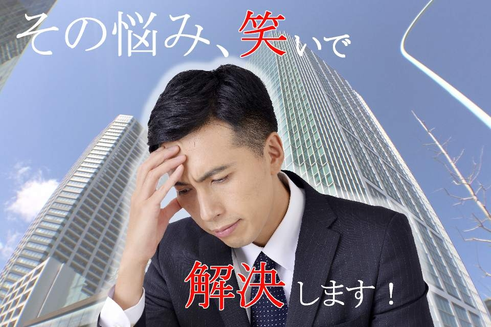
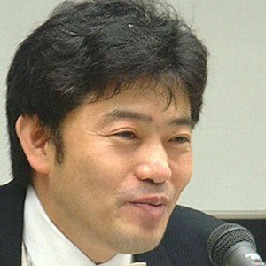

- 
ビ ジ ネ ス パ ー ソ ン の た め の お 笑 い 講 座
または私は如何にしてビジネストークをやめお笑いを愛するようになったか
ビジネス × 笑い ＝
問題解決力
笑いがビジネスに効くことをご存知ですか？
人間関係と自由な発想にお困りのあなたに！
笑いで築く職場環境！
こんな悩み…
抱えてませんか…？
- ・営業の成績に伸び悩む
- ・部署間のコミュニケーションがうまく行ってない
- ・社員同士の会話が少ない
- ・ユーモアのある会話が出来ない
- ・お客様の心をつかめない
- ・上司と部下の距離感がつかめない
そんな悩みをスパッと解決！
プロの構成作家が教えます！

ビジネス活動をしていると社内外を問わず、
日々様々な壁にぶつかります。
「自分と顧客の壁」、「自分とプレゼンテーションの相手との壁」
「自分と上司の壁」、「自分と部下の壁」等々…。
その壁を取り除くのは笑いのエネルギーです。
「面白い人」だと印象付ければ、
自分の話に対しての反応が変わります。
競合が多いビジネスシーンでは、
まず、自分自身を印象付ける事が必要なケースも
多くなります。
そこで有効となるのが笑いなのです。
5つのポイント
1.最初の3分で全てが決まる
2.講師、ベテランに営業力はない
3.営業力は聞き上手
4.話のトーンが説得力を決める
5.なぜお笑いの人は営業力があるのか
講座内容一例

時間 内容
0：00～ 講師自己紹介 （お笑いとともに歩んだキャリア）
0：20～ アイスブレイク （売れている芸人のデビューの話等）
0：40～ お笑いにおける 唯一無二の公式 とは？
異性間のコミニュケーション力 アップ！
初対面 の人達とのコミュニケーション力アップなど！
1：10～ 漫才・コント 体験（漫才やコントをやってみよう！）
人前で話すことへの慣れ、笑いの間など、講師が指導いたします！
1：40～ （なるべく） すべらない 話
皆様にお好きな話をして頂き、 改善するべき点などを指導 いたします
自分エピソード、1分間スピーチ、朝礼の訓示、様々な場面での挨拶等…
2：00～ お疲れ様でした！
その他1時間のカリキュラム・1時間30分のカリキュラム等もございます。
また、各業種、企業内のセレクションごとへの対応など、ご相談により変更を承ります。
<<<<<<< HEAD
男性 40代

受講者の声
40代 事務職 女性
生まれて初めて漫才を
自分自身で体験しましたが、
ワークショップが思った以上に
めっちゃ楽しかったです！
20代 営業 男性
漫才・コントなどのオチの型が学べて
勉強になりました！
さっそく仕事で
実践してみたいと思います。
男性 40代
カスタマーサービス
人前で話すとき
惹きつける話し方をするには
声の出し方などだけでなく
「演技力」も必要だと実感しました。
20代 女性 企画
笑いというものを
理論的に教えて頂き
今まで考えてもなかった視点で
物事を捉えることができると思います。
講師紹介
猪 虎太郎
プロフィール
手がけた仕事
劇団東京ヴォードヴィルショーにマネージャーとして入社 主に劇団を主宰する佐藤B作氏の担当マネージャーとして働く。
「若いうちに、自分が本当にやりたい事をやれ」とＢ作氏
にそそのかされ
の アドバイスを受け、夢であった放送作家を目指すために退社。
吉本興業株式会社 文芸部に所属し働く(所属といってもきちんとした契約なんかありませんが)。
そして、当時若手芸人の登竜門であった心斎橋筋2丁目劇場の劇場付き作家としてナインティナイン・雨上がり決死隊 ・千原兄弟等の若手芸人のデビューに携わる(決して育てたわけじゃございません)心斎橋筋２丁目劇場における様々な オーディション・プロデュースイベント・単独ライブの構成を担当する。
以来、テレビ・ラジオ・舞台の企画構成・演出・ドラマCDのシナリオを手がける
- テレビ
- YTV「たかじんnoばぁ～」
- ＡＢＣ「笑いの剣」
- ＭＢＳ「オールザッツ漫才」「きらめきワイド」(昼のワイドショー）
- ＴＶＯ「ＷＡＣＨＡＣＨＡ ＴＶ」「千千原原」
- SUN「アチャコテレビ」
- ＫＢＳ「よしもとはまぐりご門劇場」
- ＧＡＯＲＡ「二丁目ＷＡＣＨＡＣＨＡＬＩＶＥ」etc・・・
- ラジオ
- 文化放送・ＡＭ神戸「アルシェクラブ・ＩＴＥＭＡＥラジオ」
- ＦＭ大阪「千原兄弟二丁目ギャング」
- ＫＢＳ京都「中川家のはまぐりご門お笑いバトル」
- ＹＥＳ・ＦＭ「ＯＮＴＨＥＳＴＲＥＥＴ７８１］
- ＦＭ香川「劇団７８６ＯＮＴＨＥＲＡＤＩＯ］etc・・・
- イベント
- ３０００人のＷＡＣＨＡＣＨＡＬＩＶＥ
- １００００人のＷＡＣＨＡＣＨＡＬＩＶＥ
- １００００人のＷＡＣＨＡＣＨＡＬＩＶＥ
- ＷＡＣＨＡＣＨＡ夏の陣
- 他なんばグランド花月、ワッハ上方、心斎橋筋二丁目劇場
- baseよしもと、ＡＢＣホールにてイベント多数
- ドラマＣＤ
- 「ストリートファイター２外伝キャミイ戦いの序曲」
- 主演 三石琴乃
- 「ロックマン危機一髪」
- 主演 椎名へきる
- 「ヴォンパイアハンター外伝宿命の旅人ドノヴァン」
- 主演 小杉十郎太 椎名へきる
- 「ストリートファイタＺＥＲＯ外伝春麗旅立ちの章」
- 主演 横山智佐 辻谷耕史
- 「ストリートファイタＺＥＲＯ２外伝さくら最も危ない女子高生」
- 主演 久川綾 辻谷耕史
- 「ストリートファイタＺＥＲＯ２外伝さくら最も危ない文化祭」
- 主演 久川綾 長沢美樹
- 「私立ジャスティス学園ねらわれた太陽学園熱血死闘編」
- 主演 檜山修之 三石琴乃
- 「私立ジャスティス学園ねらわれた太陽学園熱血探偵編」
- 主演 檜山修之 三石琴乃
好田 タクト

プロフィール
手がけた仕事
劇団東京ヴォードヴィルショーにマネージャーとして入社 主に劇団を主宰する佐藤B作氏の担当マネージャーとして働く。
「若いうちに、自分が本当にやりたい事をやれ」とＢ作氏
にそそのかされ
の アドバイスを受け、夢であった放送作家を目指すために退社。
吉本興業株式会社 文芸部に所属し働く(所属といってもきちんとした契約なんかありませんが)。
そして、当時若手芸人の登竜門であった心斎橋筋2丁目劇場の劇場付き作家としてナインティナイン・雨上がり決死隊 ・千原兄弟等の若手芸人のデビューに携わる(決して育てたわけじゃございません)心斎橋筋２丁目劇場における様々な オーディション・プロデュースイベント・単独ライブの構成を担当する。
以来、テレビ・ラジオ・舞台の企画構成・演出・ドラマCDのシナリオを手がける
- テレビ
- TBS 「たけしのお笑いサドンデス」
- MBS「笑わなあかん夜」
- YTV「１００万円争奪、爆笑エンターティナー お笑い日本一決定戦」
- MBS「花月爆笑劇場」（吉本新喜劇）
- ABC 「『お笑い花月劇場』（吉本新喜劇）
- ＮＨＫ教育テレビ「あしたもげんきくん」
- ＺＤＲ、ＡＲＤ（ドイツ国営放送）「世界の大道芸」
- テレビ東京「ビートたけしの誰でもピカソ」
- ＮＨＫ「演芸図鑑」「国立演芸場名人劇場」など各演芸番組
- ＮＨＫ「カラヤン特集」「ベルリンフィルのすべて」など各クラシック番組
- テレビ朝日「題名のない音楽館」
- ラジオ
- ＴＢＳラジオ 「大沢悠里のゆうゆうワイド」
- その他 文化放送、ニッポン放送、ラジオ関西の番組
- クラシック音楽番組に多数出演。
- 舞台
- 浅草東洋館に1000回以上出演
- 大阪天満繁昌亭に一週間を年二回昼席に出演
- 国立演芸場、池袋演芸場、上野広小路亭、浅草演芸ホール、日本橋亭、吉本花月、末廣亭、浅草木馬亭
- など各寄席に多数出演。
- 世界最大の音楽祭、有楽町国際フォーラムでの「ラ・フォル・ジュルネ・オ・ジャポン」に毎年、
- パフォーマンスとクラシックソムリエ役で出演。
- 「めざましクラシック」「仙台フィルと好田タクトの楽しくクラシック」「田中真弓のおっ、ぺれった」
- など各ジャンルの舞台に出る。
- 定期的にオーケストラと演芸のコラボレーション「タクト音楽祭」を開催。文化庁芸術祭参加公演。
- 上野水上音楽堂「タクトの史上最高のボードビルショー 9時間72組出演プロデュース公演」
- 永六輔氏のプロデュースに多数出演。
- 著書
- 『もう一つの上方演芸』(たちばな出版)
- 『クラシック音楽夢レース』(キングベアー出版)
- 『世界一楽しいタクトのクラシック音楽館』(実業之日本社)
- 『トンデモ音楽の世界』(小学館)
- 各新聞社に依頼で寄稿。
- タクトテレビ
- 浅草の自宅から、ユーストリームを利用して「タクトテレビ」を配信中。300放送を制作。
フジテレビなど各民放に取り上げられる。
お問い合わせ
当サイトへのお問い合わせ
Copyright © ビジネスパーソンのためのお笑い講座 All Rights Reserved.